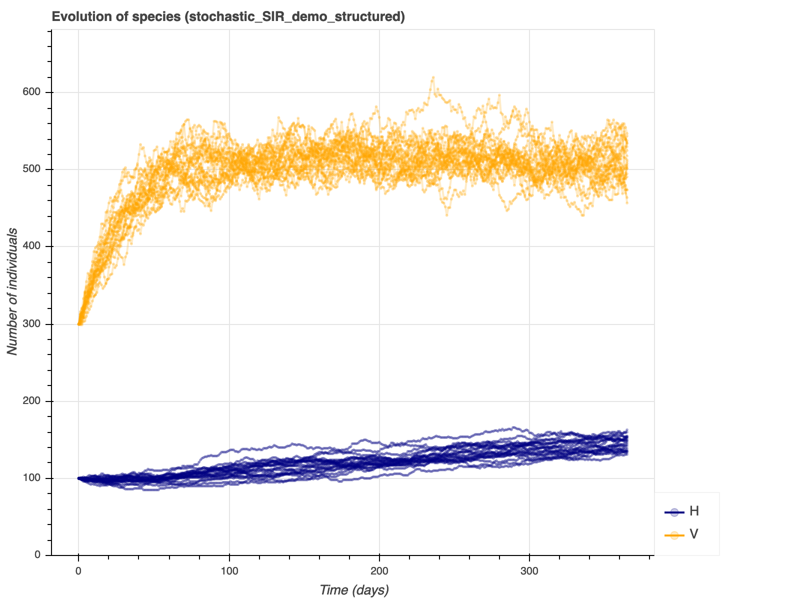
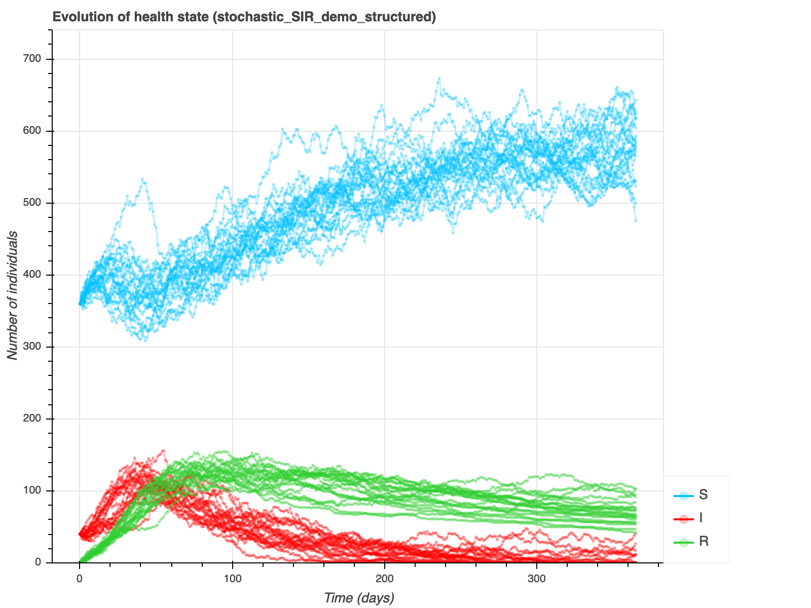
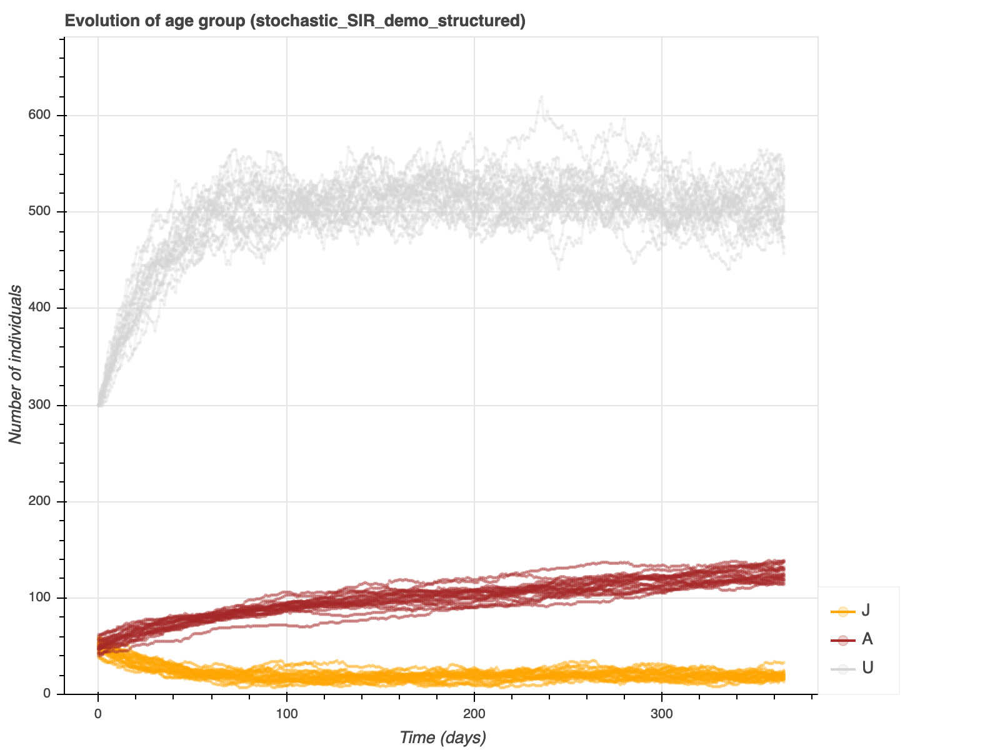
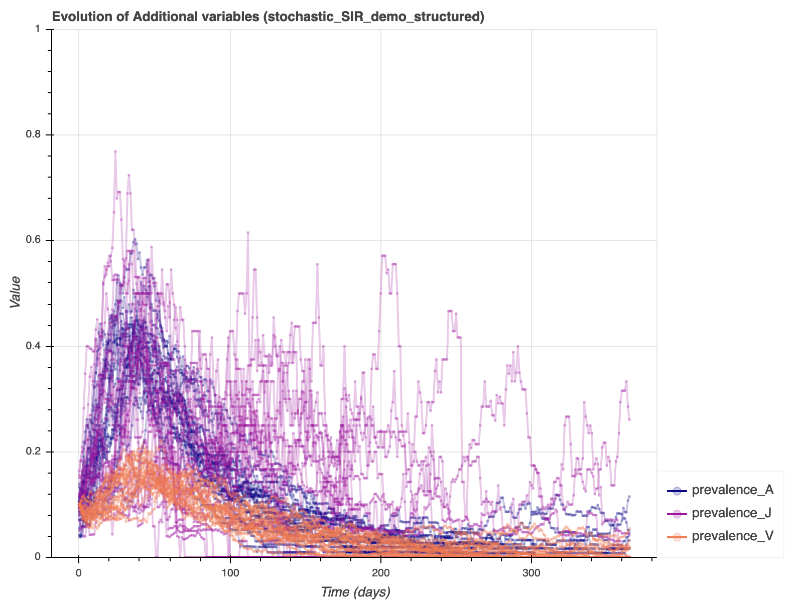

Model 4 (M3 + vectors)¶
Species are introduced as states of a new state machines (without any transition). A dedicated age group called Undefined is added to indicate that vectors do not follow the Juvenile/Adult transitions in this model. Otherwise, other modifications in the model are very similar to what was done for structured populations.
File with full comments: model4.yaml
---
model_name: stochastic_SIR_demo_structured
model_info:
abstract: 'This model is a simple discrete-time, stochastic,
hybrid SIR model with demography and structured population.'
author: 'Sebastien Picault (sebastien.picault@inra.fr)'
time_info:
time_unit: days
delta_t: 1
origin: 'January 1'
total_duration: '365'
levels:
population:
desc: 'level of the population'
aggregation_type: hybrid
contains:
- individuals
individuals:
desc: 'level of the individuals'
grouping:
population:
species_groups:
machine_name: species
key_variables: [species]
infection:
machine_name: health_state
key_variables: [health_state, age_group, species]
aging:
machine_name: age_group
key_variables: [age_group]
processes:
population:
- species_groups
- infection
- aging
state_machines:
species:
desc: 'the species of the individuals'
states:
- H:
name: 'Host'
desc: 'host individual'
fillcolor: 'navy'
- V:
name: 'Vector'
desc: 'vector animal'
fillcolor: 'orange'
health_state:
desc: 'The state machine which defines the evolution of health
states'
states:
- S:
name: 'Susceptible'
desc: 'suceptible of becoming infected'
fillcolor: 'deepskyblue'
default: yes
- I:
name: 'Infectious'
desc: 'infected and able to transmit the disease'
fillcolor: 'red'
- R:
name: 'Resistant'
desc: 'recovered and resistant to new infections'
fillcolor: 'limegreen'
transitions:
- from: S
to: I
rate: 'is_H * (is_J * force_infection_juveniles + is_A * force_infection_adults
+ force_of_infection_due_to_vectors)
+ is_V * force_of_infection_vectors'
- {from: I, to: R, rate: 'is_H * gamma_H + is_V * gamma_V'}
age_group:
desc: 'The state machine which defines the evolution of age
groups.'
states:
- J:
name: 'Juvenile'
desc: 'juvenile individuals'
fillcolor: 'orange'
- A:
name: 'Adult'
desc: 'adult individuals (producing new juveniles)'
fillcolor: 'brown'
- U:
name: 'Undefined'
desc: 'no age group is defined for vectors'
- D:
name: 'Dead'
desc: 'compartment to put dead individuals'
fillcolor: white
autoremove: yes
transitions:
- {from: J, to: A, rate: 'm'}
- {from: J, to: D, rate: 'mu_J * total_H / K_H'}
- {from: A, to: D, rate: 'mu_A * total_H / K_H'}
- {from: U, to: D, rate: 'b_V * total_V / K_V'}
productions:
- {from: A, to: J, rate: 'b_H', prototype: 'newborn_host'}
- {from: U, to: U, rate: 'b_V', prototype: 'newborn_vector'}
parameters:
initial_host_population:
desc: 'initial number of hosts in the population'
value: 100
initial_host_prevalence:
desc: 'initial proportion of infectious hosts in the population'
value: 0.1
beta_W:
desc: 'within-group transmission rate from infectious individuals (/day)'
value: 0.1
beta_B:
desc: 'between-group transmission rate from infectious individuals (/day)'
value: 0.01
gamma_H:
desc: 'recovery rate for hosts'
value: '1/30'
b_H:
desc: 'the birth rate of hosts (/day)'
value: 0.005
m:
desc: 'maturation rate, at which juveniles become adults (/day)'
value: '1/50'
mu_J:
desc: 'base mortality rate for juveniles (/day)'
value: 0.01
mu_A:
desc: 'base mortality rate for adults (/day)'
value: 0.0025
K_H:
desc: 'carriage capacity of the environment for hosts'
value: 150
force_infection_juveniles:
desc: 'force of infection experienced by juveniles'
value: 'beta_W * total_I_J_H / (total_J + 1e-9) + beta_B * total_I_A_H / (total_A + 1e-9)'
force_infection_adults:
desc: 'force of infection experienced by adults'
value: 'beta_W * total_I_A_H / (total_A + 1e-9) + beta_B * total_I_J_H / (total_J + 1e-9)'
prevalence_J:
desc: 'prevalence in juvenile group'
value: 'total_I_J_H / (total_J + 1e-9)'
prevalence_A:
desc: 'prevalence in adult group'
value: 'total_I_A_H / (total_A + 1e-9)'
force_of_infection_vectors:
desc: 'force of infection experienced by vectors'
value: 'rho_HV * a * (total_I_A_H + total_I_J_H) / (total_H + 1e-9)'
force_of_infection_due_to_vectors:
desc: 'force of infection experienced by hosts due to vectors'
value: 'rho_VH * a * total_I_U_V / (total_V + 1e-9)'
rho_HV:
desc: 'transmission probability from an infected host to a
susceptible vector'
value: 0.6
rho_VH:
desc: 'transmission probability from an infected vector to a
susceptible host'
value: 0.1
a:
desc: 'biting rate (/day)'
value: '1/10'
K_V:
desc: 'carriage capacity of the environment for vectors'
value: 500
b_V:
desc: 'the birth rate of vectors (/day)'
value: 0.05
gamma_V:
desc: 'recovery rate for vectors'
value: '1/20'
initial_vector_population:
desc: 'initial number of vectors in the population'
value: 300
initial_vector_prevalence:
desc: 'initial proportion of infectious vectors in the population'
value: 0.1
prevalence_V:
desc: 'prevalence in vector group'
value: 'total_I_U_V / (total_V + 1e-9)'
prototypes:
individuals:
- healthy_host:
desc: 'healthy hosts'
health_state: S
age_group: 'random(0.5, 0.5, 0)'
species: H
- infected_host:
desc: 'infected hosts'
health_state: I
age_group: 'random(0.5, 0.5, 0)'
species: H
- newborn_host:
desc: 'newborn host assuming no vertical transmission'
health_state: S
age_group: J
species: H
- healthy_vector:
desc: 'healthy vector'
health_state: S
age_group: U
species: V
- infected_vector:
desc: 'infected vector'
health_state: I
age_group: U
species: V
- newborn_vector:
desc: 'newborn vector assuming no vertical transmission'
health_state: S
age_group: U
species: V
initial_conditions:
population:
- prototype: healthy_host
amount: 'initial_host_population * (1 - initial_host_prevalence)'
- prototype: infected_host
amount: 'initial_host_population * initial_host_prevalence'
- prototype: healthy_vector
amount: 'initial_vector_population * (1 - initial_vector_prevalence)'
- prototype: infected_vector
amount: 'initial_vector_population * initial_vector_prevalence'
outputs:
type: csv
population:
period: 1
extra_vars:
- prevalence_A
- prevalence_J
- prevalence_V
...
To run the model for 20 stochastic repetitions:
emulsion run --plot model4.yaml -r 20 --silent
Which produces the following outputs:
   {kind=link}
{kind=link}
{kind=link}
{kind=link}
To produce the diagrams of the state machines which control health states, age groups and species:
emulsion diagrams model4.yaml
Which gives:
To view model parameters:
emulsion show model4.yaml
which produces:
Simulation level:population
EmulsionModel "stochastic_SIR_demo_structured"
AVAILABLE PARAMETERS (with their current value)
------------------------------------------------------------------------
MODEL PARAMETERS
------------------------------------------------------------------------
total_duration.................................................365.0
initial_host_population........................................100.0
initial_host_prevalence..........................................0.1
beta_W...........................................................0.1
beta_B..........................................................0.01
gamma_H..........................................0.03333333333333333
b_H............................................................0.005
m...............................................................0.02
mu_J............................................................0.01
mu_A..........................................................0.0025
K_H............................................................150.0
rho_HV...........................................................0.6
rho_VH...........................................................0.1
a................................................................0.1
K_V............................................................500.0
b_V.............................................................0.05
gamma_V.........................................................0.05
initial_vector_population......................................300.0
initial_vector_prevalence........................................0.1
delta_t..........................................................1.0
------------------------------------------------------------------------